Dark acid garage. Broken structures. Hypnotic rhythm.
One room, 808s and 303s, from daylight to close. It starts slow and wide and tightens after dark.

Aayna is an Indian DJ and producer whose work orbits the Roland TB-303. She reworks the acid house architecture of the 1980s and 1990s through house, electro, breaks, UK garage, IDM and left-field forms. She has played the main stages of Magnetic Fields and DGTL India, plus Echoes of Earth in Bangalore, Ziro Festival and Grasslands in Nepal. Keep Hush has carried her mixes; her Boiler Room set is on YouTube.

OMDG is a Dhaka DJ, producer and promoter who has spent a decade building the infrastructure his own scene needed. Active since 2014, he co-founded Breakfast Club Dhaka, Farmhaus, Rumours and Socials, and BOFA, one of the first YouTube channels to document Bangladeshi electronic artists. He was featured in the inaugural MIXMAG Dhaka episode. He has played across India, Sri Lanka and Kenya, and released as OMDG × Mana on AH Digital.

shadYman came up through Cat House Melbourne, the techno collective that shaped his sound: dark, hard, functional. Since 2018 he has shared stages with Amotik, Setaoc Mass, Cleric, Lewis Fautzi, Takaaki Itoh and Phase. He then franchised Cat House to Dhaka with a small group of friends, importing the format rather than just the records.
AASHNAi, also known as NAI, was among the first femme DJs in the Dhaka underground. DJ, producer and multimedia artist working across leftfield techno, bass, experimental club, neo-trance and noise. She has appeared on Keep Hush Bangladesh and Nepal with Bhai Bhai Soundsystem, shared lineups with Jai Wolf, KISSNUKA and Joi Soundsystem, and played Outerspace Kochi, the Shinsaibashi circuit and Westharlem Kyoto alongside Manchineel, Kazushi and Lomax. Her EP AJNA landed in 2025.

The Brown Testament is Seeham, a Bangladesh-American DJ and founder splitting time between Dhaka and Washington DC. He founded Elysium Affair, SYM Society, Soundesh and Altitude, and runs Nobo Festival and the Matcha Society series. He has played Brooklyn Monarch, Vagalume Tulum, Do Not Sit On the Furniture, Members LA and SXSW, and opened for Guy J, Yokoo, Dosem, Yulia Niko, Mahmut Orhan and Jeremy Olander.
No filming.
We cover your camera lens at the gate. Your phone still works for calls and messages. Our photographers shoot until close and share the photos afterwards on a private link.
No alcohol.
No substances.
Bags are checked at the gate. Anyone carrying or using is turned away or removed, with no refund and no re-entry.
All black.
Head to toe. Wear what you can move in, shoes you can stand in until close, and nothing that reflects light.
We hold the right to say no.
Break any rule and you will be denied entry.
Request access.
Entry is by request only. We read every request by hand, and capacity is limited.